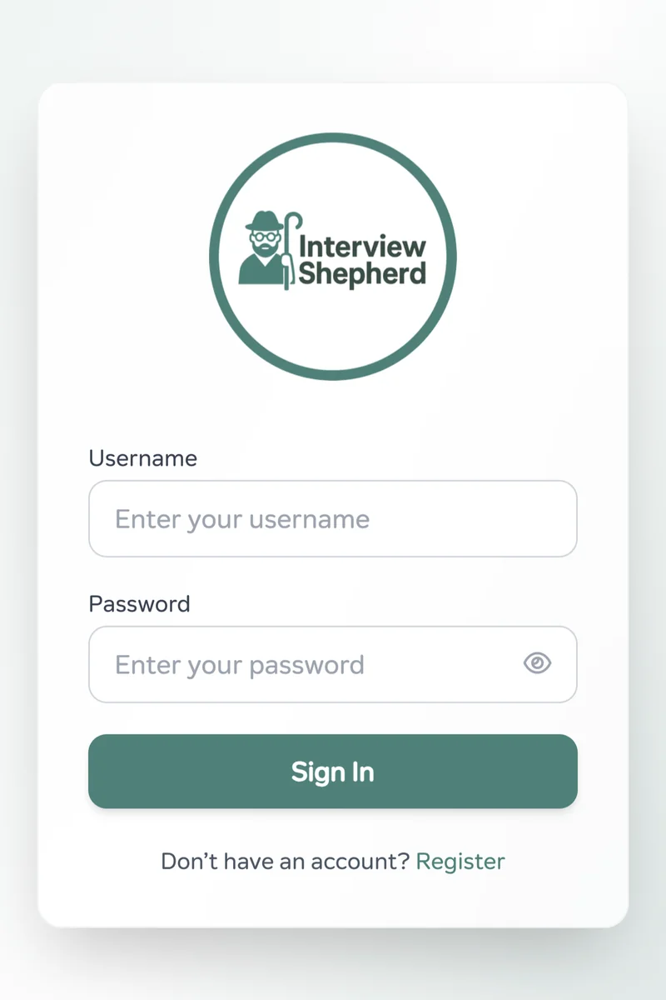
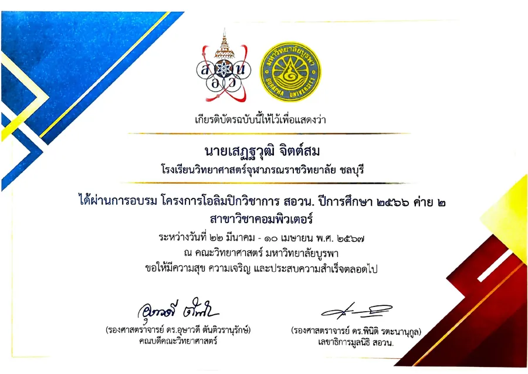
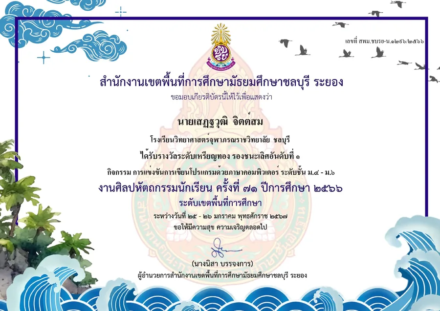
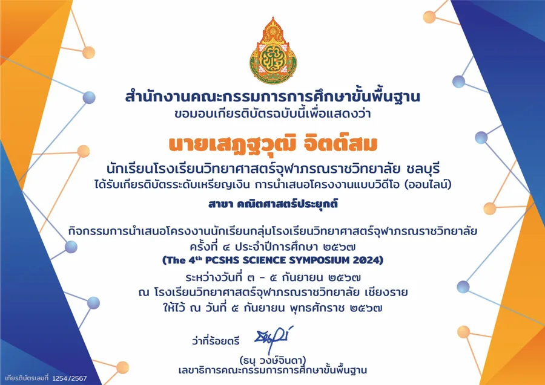

MY PORTFOLIO
Setthawut Jitsom
PROJECTS & CERTIFICATES

Interview Shepherd
Interview Shepherd is a web application that helps users practice job interviews with an AI-powered interviewer. The platform simulates realistic interview scenarios, provides instant feedback, and supports multiple job roles and languages through customizable job posts to be used for interviews.
Role: Designed and developed a responsive frontend interface for an AI-powered interview platform using HTML and Tailwind CSS.

POSN Camp 2
- Selected candidate for the highly competitive Computer Olympiad Camp 2 at Burapha University.
- Mastered advanced algorithms and data structures (C++).

Gold Medal, Computer Programming Competition
Achieved Gold Medal (Runner-up) in the 71st Student Arts and Crafts Competition.

Silver Medal, Science Symposium 4th
The 4th PCSHS Science Symposium (Applied Mathematics).